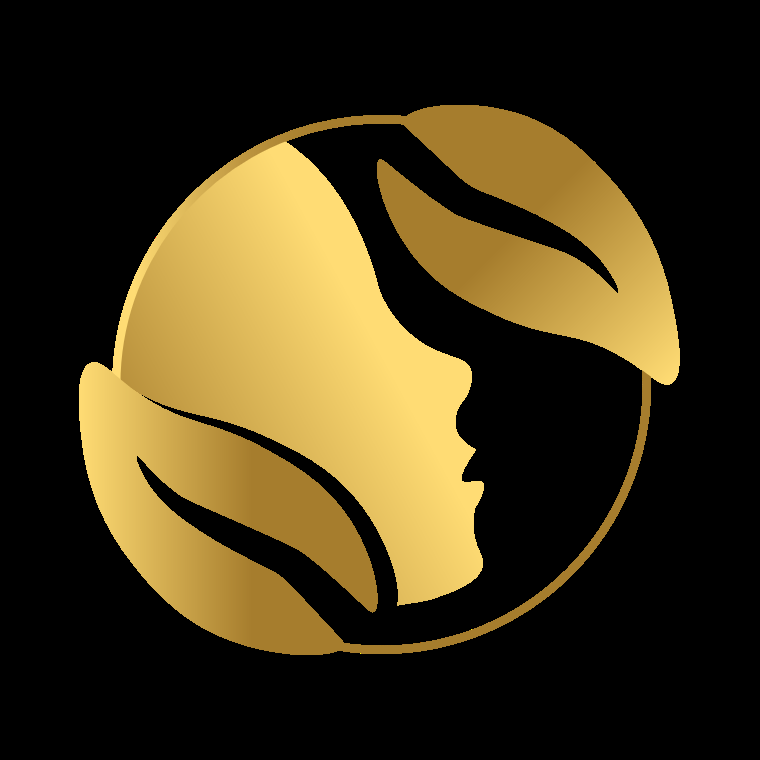

Лого · Цветова палитра · Типография: как един бранд става разпознаваем, последователен и запомнящ се.

Инструменти, използвани в процеса
Система от визуални елементи, които правят един бранд разпознаваем във всички точки на контакт.
Централният символ на бранда. Може да бъде символ, дума или комбинация.
Основни и допълнителни цветове, които носят емоция и разпознаваемост.
Система от шрифтове за заглавия, текст и акцент.
Икони, патерни, илюстрации, фотографски стил. Събрани в Brand Guidelines.
Хората формират мнение за бранда за секунди. Визуалният език говори преди думите.
Цветовете и формите предизвикват емоции и асоциации, които изграждат лоялност.
Еднаквият визуален език във всички канали създава стабилност и професионализъм.
Силната идентичност прави бранда лесно разпознаваем и труден за копиране.
Бранд стратегия, целева аудитория и конкурентен анализ.
Moodboard, ключови думи и визуална посока.
Лого, цветове и типография като единна система.
Mockups, система от приложения и Brand Guidelines.
Кратки отговори на най-важните въпроси от курсовата работа.
Система от визуални елементи (лого, цветове, типография, графични елементи), която прави бранда разпознаваем, последователен и запомнящ се.
Wordmark, Lettermark, Pictorial, Abstract, Mascot и Combination. Комбинацията от символ и текст е най-често използваният тип.
Обикновено 2 шрифта са достатъчни: един за заглавия и един за текст. Максимум 3.
Употреба на логото, цветове (RGB, CMYK), типография, иконография, фотография и примери за правилни и неправилни приложения.
Чистота, светлина и ежедневен ритуал. Минимализъм, топли неутрални тонове и тиха елегантност.
Разгледай бранда